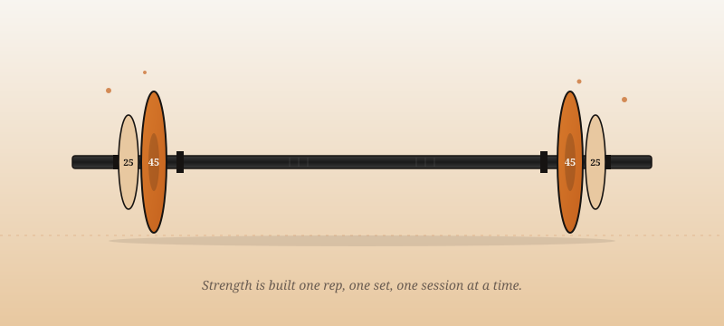

Training Principles
Learn the three drivers of muscle growth, how progressive overload actually works, and why volume landmarks (MV, MEV, MAV, MRV) are the most important concept most lifters have never heard of.
Build Muscle. Backed by Science.
Most of what you see on social media about building muscle is wrong, exaggerated, or sold to you. HyperForge distills decades of resistance training research into clear, practical guidance you can actually use in the gym.
Start with the Principles
The fitness industry runs on attention, not accuracy. Influencers chase engagement with flashy transformations and bold claims, while the people who actually want to grow muscle are left to sort through a decade of conflicting advice. HyperForge takes a different approach: every recommendation on this site traces back to peer-reviewed research, not anecdote.
Whether you are stepping into the weight room for the first time or you have been training long enough to feel stuck, the content here is designed to give you a framework you can build on for the rest of your training life.
Learn the three drivers of muscle growth, how progressive overload actually works, and why volume landmarks (MV, MEV, MAV, MRV) are the most important concept most lifters have never heard of.
Choose the right exercises for your goals and your body. Compare key training variables across experience levels and see proper form demonstrated on the compound lifts.
Take the principles and put them into practice. Learn how to structure a training split, design a mesocycle, and time your deloads so you keep progressing instead of burning out.
HyperForge is written for two kinds of lifters. The first is the beginner who has gym access and motivation but no real framework for what to do once they get there. The second is the intermediate lifter who has been training for a year or two, understands the basics, and has hit the wall that hits every intermediate lifter eventually. If either of those sounds like you, you are in the right place.